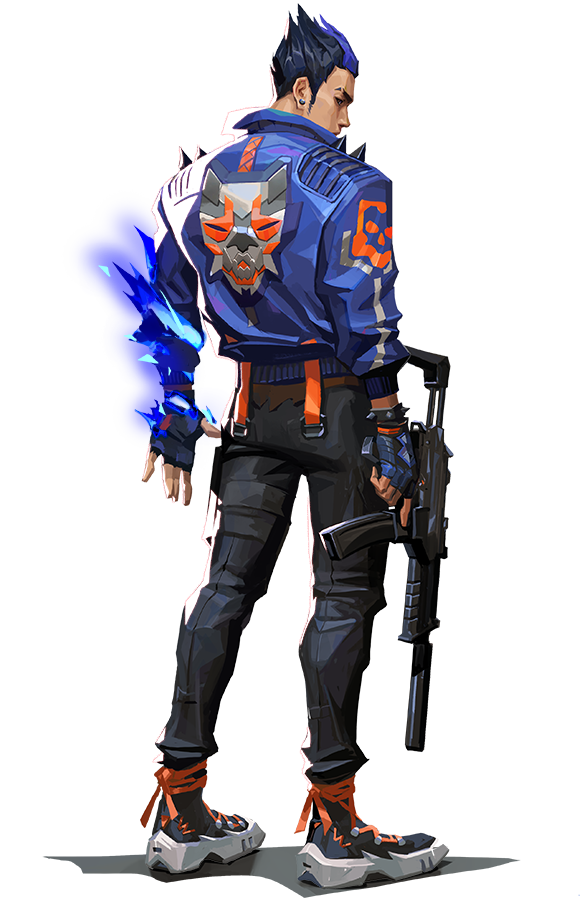

LaForant is a tactical First Person Shooter game
played with several agents/characters within a map.
The main goal of the game is for a team of attackers to plant a bomb on
a site and keep it from being defused by a team of defenders whose goal
is to defend the sites from being attacked and taken over.
The agents available have their own unique abilties, which some of them can help them advance to a site and take it quickly, some can prevent attackers from getting in and hold them in place, some can aid their team by giving them buffs to help them in shootouts, and more.
Maps are the field in which the teams contest
with each other.
Each map has their own
quirks making the game feel different from
each map to keep the game fresh.